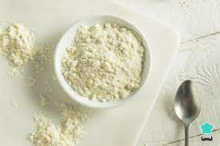
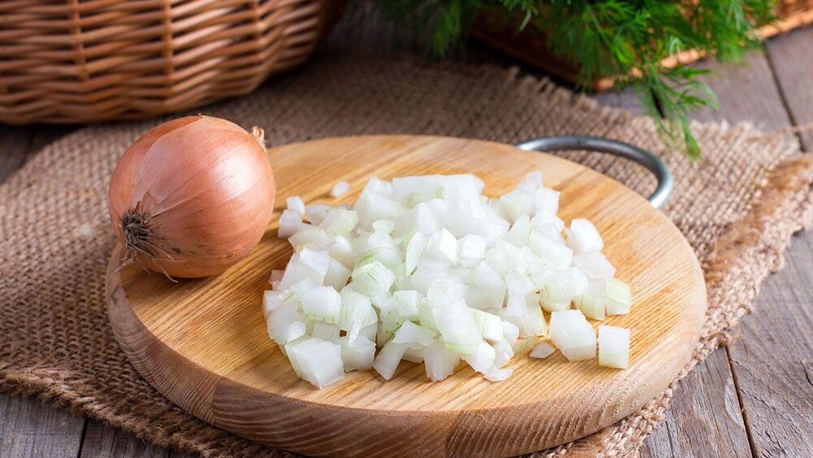

2 tazas de queso rallado (puedes usar cheddar, mozzarella, o tu queso favorito)
1 taza de harina de almendra (o harina de trigo si no tienes restricciones alimentarias)

1 cucharadita de polvo de hornear
1 huevo
Sal y pimienta al gusto
Opcionales: cebollín picado, tomate en cubos pequeños, o cualquier otro ingrediente que desees agregar.

Opcional
Instrucciones:
Precalienta el horno a 200°C.
En un tazón grande, mezcla el queso rallado, la harina de almendra, el polvo de hornear, el huevo, la sal y la pimienta. Asegúrate de que todos los ingredientes estén bien combinados.
En una bandeja para hornear cubierta con papel pergamino, coloca montones pequeños de la mezcla (aproximadamente 1-2 cucharadas por montón), dejando espacio entre cada uno.
Extiende ligeramente cada montón para formar pequeñas tortillas.
Opcional: Agrega cebollín, tomate u otros ingredientes de tu elección en la parte superior de cada tortilla.
Hornea en el horno precalentado durante aproximadamente 8-10 minutos o hasta que las tortillas estén doradas en los bordes.
Retira del horno y deja enfriar por unos minutos antes de servir.